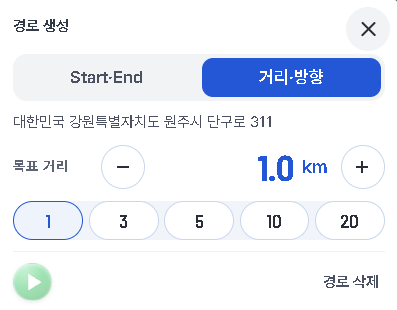
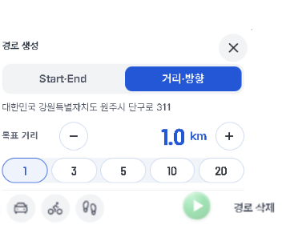
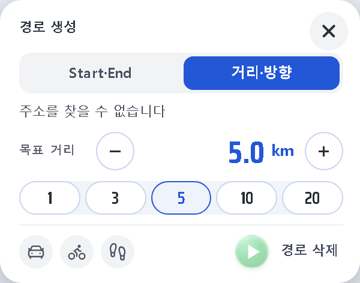
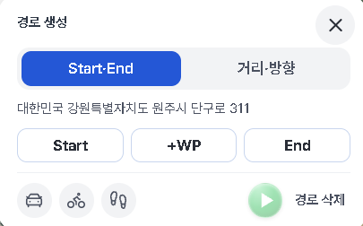
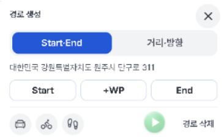
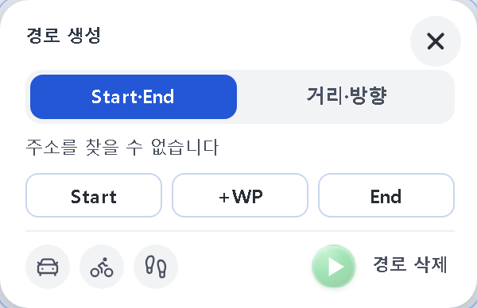
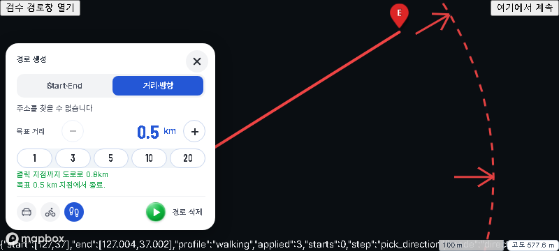
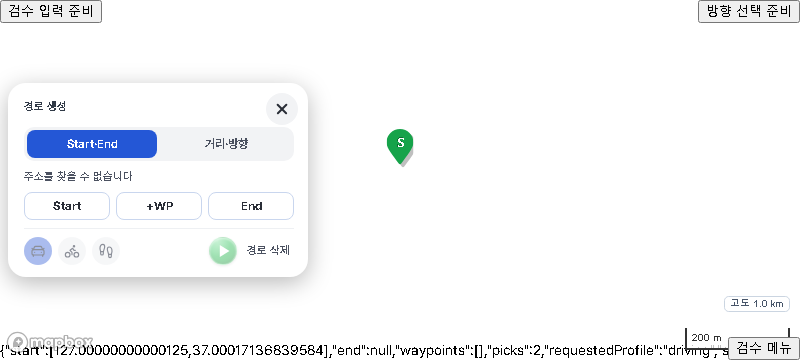

지시74 — 경로 팝업 두 탭의 맨 아래 줄 통일
구현·감리·캡처: Claude Code 직접. 오른쪽 "후" 그림은 실제 제품 코드로 찍은 2배 캡처입니다.
거리·방향 탭



Start·End 탭



실제 지도에서 — 거리·방향 결과 뒤 「도보」 재탐색


- 거리·방향: 방향을 고르기 전에 수단을 누르면 그 수단으로 다음 탐색, 결과가 나온 뒤에 누르면 바로 그 수단으로 다시 탐색합니다.
- 녹색 재생 버튼(고정1)·Start·+WP·End(고정13)·경로 삭제 자리(10-21)는 그대로입니다.